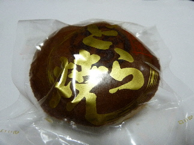

本山ベーカリーのドラヤキは食べやすい。
更新日 : 2013/08/08

見た目、普通に和菓子屋さんのドラヤキですね。
パックしてあるので日持ちが良くて、お土産にピッタリです。
お味ですが、そんなに甘くないです。私はお茶がなくてもパクパクいただけました。
甘さ控えめですね。あと、塩味が効いてるのかな。
軽い感じで食べやすいドラヤキでした。
島根県江津市和木町603ｰ20
更新日 : 2013/08/08

見た目、普通に和菓子屋さんのドラヤキですね。
パックしてあるので日持ちが良くて、お土産にピッタリです。
お味ですが、そんなに甘くないです。私はお茶がなくてもパクパクいただけました。
甘さ控えめですね。あと、塩味が効いてるのかな。
軽い感じで食べやすいドラヤキでした。